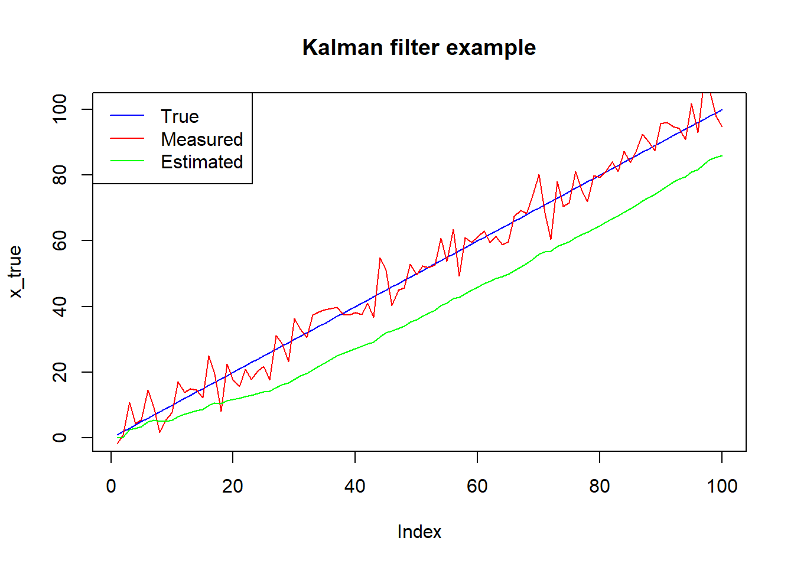

library(ggplot2)5 Kalman filter
5.1 load libraries needed
6 Kalman filter
the Kalman filter is an algorithm that estimates the state of a dynamic system in the presence of noise. It is widely used in applications such as navigation, control systems, and signal processing. The Kalman filter assumes that the system dynamics can be modeled using a linear state-space model, and the noise is Gaussian and white. It recursively updates the estimate of the state based on the current measurement and the previous estimate.
Here’s an example of how to implement a simple Kalman filter in R to estimate the position of a moving object:
# Generate some example data
set.seed(123)
n <- 100
x_true <- 1:n
x_meas <- x_true + rnorm(n, sd = 5)
# Define the Kalman filter function
kalman_filter <- function(x_meas, Q, R, x_init, P_init) {
n <- length(x_meas)
x_est <- rep(0, n)
P_est <- rep(0, n)
K <- rep(0, n)
x_est[1] <- x_init
P_est[1] <- P_init
for (i in 2:n) {
# Predict step
x_pred <- x_est[i-1]
P_pred <- P_est[i-1] + Q
# Update step
K[i] <- P_pred / (P_pred + R)
x_est[i] <- x_pred + K[i] * (x_meas[i] - x_pred)
P_est[i] <- (1 - K[i]) * P_pred
}
return(list(x_est = x_est, P_est = P_est, K = K))
}
# Define the parameters of the filter
Q <- 0.1
R <- 25
x_init <- 0
P_init <- 10
# Apply the filter to the example data
kf_result <- kalman_filter(x_meas, Q, R, x_init, P_init)
# kf_result
# Plot the results
plot(x_true, type = 'l', col = 'blue', ylim = c(0, n+1), main = 'Kalman filter example')
lines(x_meas, col = 'red')
lines(kf_result$x_est, col = 'green')
legend('topleft', legend = c('True', 'Measured', 'Estimated'), col = c('blue', 'red', 'green'), lty = 1)
In this example, we generate some example data representing the true position of a moving object (x_true) and noisy measurements of its position (x_meas). We then define a Kalman filter function (kalman_filter) that takes as input the measurements and some parameters (Q, R, x_init, and P_init) and returns the estimated position (x_est), the estimated uncertainty (P_est), and the Kalman gain (K) at each time step. We apply the filter to the example data and plot the results, showing the true position in blue, the measured position in red, and the estimated position in green.